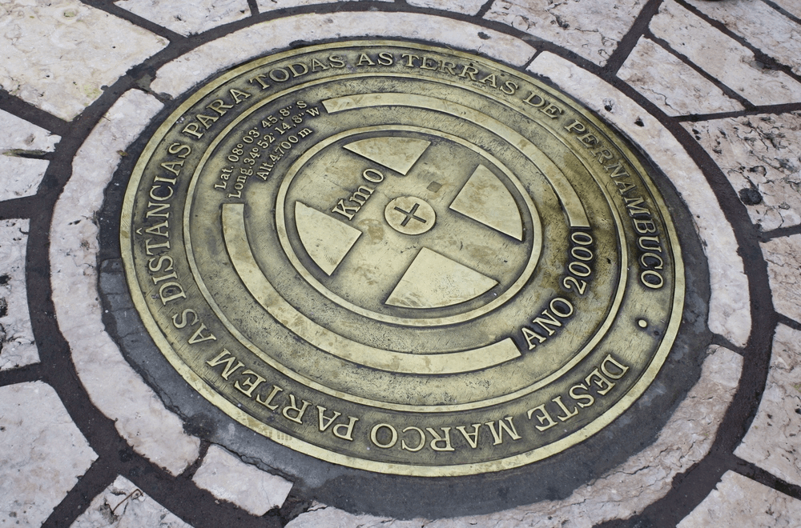

Km 0
O Marco Zero, na Praça Rio Branco, é conhecido como local de fundação da cidade do Recife e também como ponto inicial de contagem das distâncias calculadas a partir da cidade.
Outros
Se quiser fazer compras, vale a pena visitar o novo Mercado de Artesanato, que também fica no local.